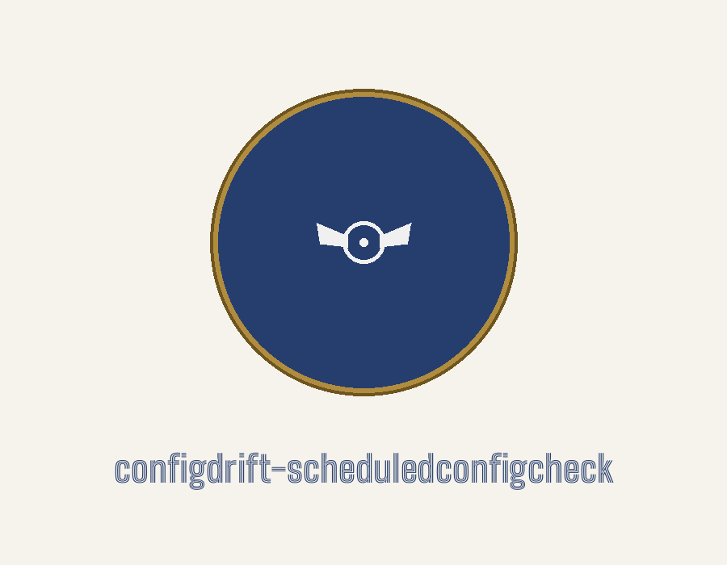

Theme: Telegraph Boy's Bicycle Insignia.
A scheduler runs one named command again and again. Each run reads the command output as a configuration, loads the baseline again with no caching, and compares the two with DeepDiff while ignoring order.
The install line is shown as printed, with its fault recorded in the notes. The working line is python3 main.py COMMAND BASELINE, and both positionals are required.
Controls: -h, COMMAND, BASELINE, --interval (default 60, minimum 10), --output, --format (yaml or json, autodetect if left out, YAML if ambiguous), --remote (fetched each run, timeout 10 seconds), and --allow-http.
The first run waits one full interval. An interval below 10 seconds exits 1 at startup. A failed comparison is an error, not a clean result. Drift carries no exit code.
 # configdrift-ScheduledConfigCheck A simple scheduler that periodically runs a user-defined command (e.g., a configuration extraction script) and compares the output to a baseline. Alerts if differences are found. Uses `schedule` and `subprocess`. - Focused on Detects and reports deviations from baseline configurations across systems or applications. Compares current configurations to a known-good state, highlighting changes that could introduce security vulnerabilities or compliance issues. Supports multiple configuration formats (e.g., YAML, JSON) and remote configuration retrieval. ## Install `git clone https://github.com/ShadowStrikeHQ/configdrift-scheduledconfigcheck` ## Usage `./configdrift-scheduledconfigcheck [params]` ## Parameters - `-h`: Show help message and exit - `--interval`: No description provided - `--output`: Path to output differences to file. - `--format`: No description provided - `--remote`: Treat the baseline as a URL to fetch the baseline configuration from. - `--allow-http`: Allow fetching a remote baseline over plain http. Without this flag a remote baseline URL must use https. A remote baseline is fetched with a 10 second timeout and is trusted as the known good baseline: whatever the URL returns is treated as the correct configuration to compare against, so use a source you trust. Remote baselines must use https unless `--allow-http` is passed for a plain http URL. ## License Copyright (c) ShadowStrikeHQ